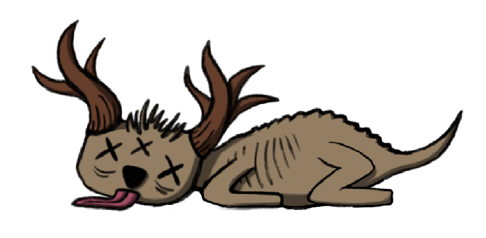
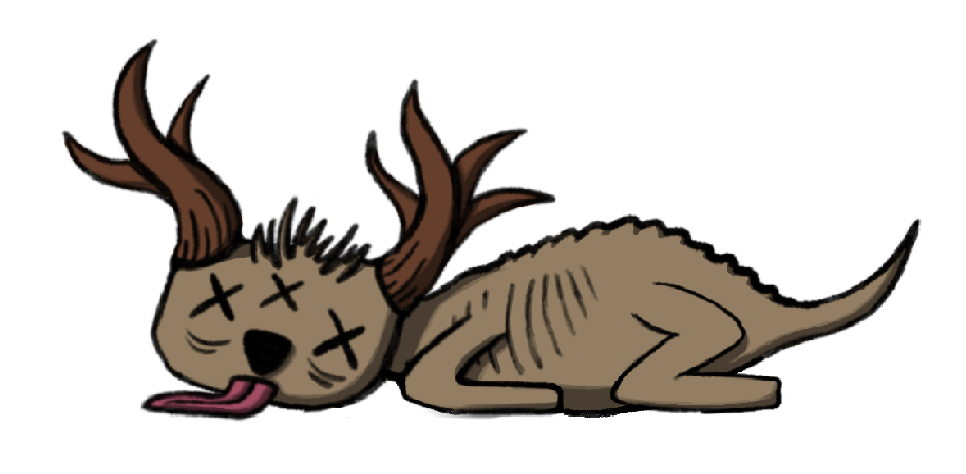

J'ai dû recoder les mouvements du joueur tout en les rendant compatibles avec les commandes de la Nintendo Switch.
J'ai également ajouté un effet visuel lors du changement de direction : étant donné que le jeu est en 2D, une animation de rotation du sprite a été intégrée pour renforcer l'immersion et la réactivité du personnage.

J'ai également ajouté un effet visuel lors du changement de direction : étant donné que le jeu est en 2D, une animation de rotation du sprite a été intégrée pour renforcer l'immersion et la réactivité du personnage.


 
